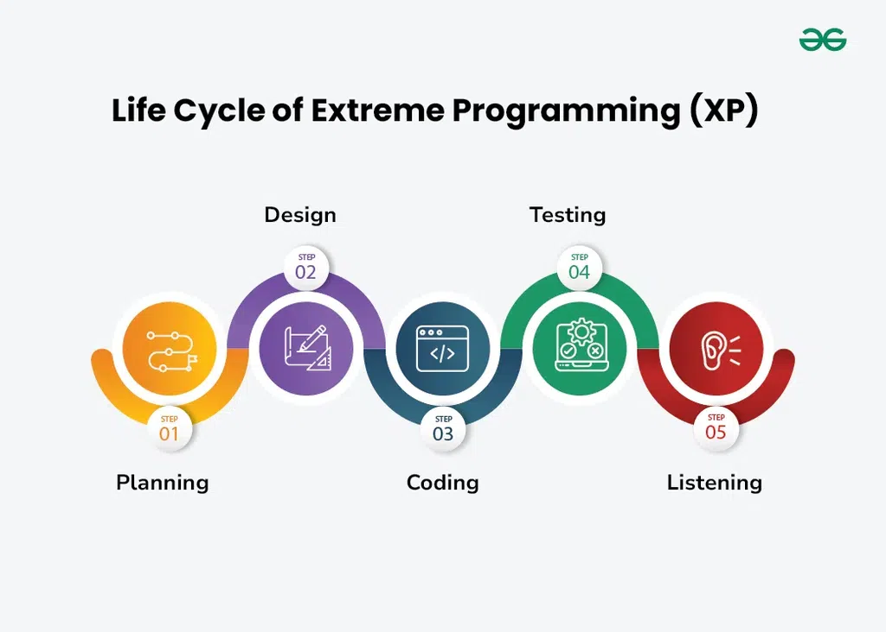

Extreme Programming on aiiglse tarkvara arenduse lähenemisviis mis keskendub kõrge kvaliteedi tarkvara
toomisel kasutades pidevat ja sagedat tagasisidet, koostööd ning kohanevus. Extreme Programming rõhutab
arendus meeskonna, kliendi ja sidusrühmade vahelist tihedat töösuhet, rõhuasetusega kiirel ja iteratiivsel
arendusel ning juurutamisel. Extreme Programming projekt algab kasutajate loodega, mis on lühikesed kirjeldused
mis stsenaariumid kliendid ning kasutajad tahavad, et süsteem toetaks. Iga loo on kirjutatud eraldi kaardile,
et neid saaks paindlikult rühmitada.
Extreme Porgramming koosneb viiest etappidest:
1. Planeerimis etappis, klientid kirjeldavad oma vajadused ning kokkuvõtlikud kirjeldused ja seda nimetatakse kasutaja lood.
Meeskond arvutad pingutust, mis on vaja iga loo ning ajakava väljastused tuginedes prioriteedile ning pingutusele.
2. Disainimis etappis, meeskond koostab ainult vajalikku disaini, mida on vaja praeguste kasutajloode jaoks, kasutades ühist
analoogiat või lugu, et aidata kõigil mõista süsteemi üldist arhitektuuri ning hoida disain lihtsa ja selgena.
3. Koodimis etappis, Extreme Programming edendab paarisprogrammeerimist, kus näiteks kaks arendajat töötavad koos ühes töökohas,
suurendades koodi kvaliteed ning teadmiste jagamist. Nad kirjutavad testid enne koodimist, et tagada funktsionaalsust algusest peale
ning sageli integreerida nende kood jagatud repositooriumisse automatiseeritud testidega, et probleeme varakult avastada.
4. Testimis etappis, Extreme Programming pöörab tähelepanu testimisele, mis koosneb nii ühiktestidest kui ka vastuvõtutestidest.
Automatiseeritud ühiktestid kontrollivad, kas teatud funktsioonid töötavad õigesti. Klientide läbiviidavad vastuvõtutestid tagavad,
et kogu süsteem vastab esialgsetele nõuetele. See pidev testimine tagab tarkvara kvaliteedi ja vastavuse klientide vajadustele.
5. Kuulamis etappis, kasutatakse tavalist tagasisidet klientidelt, et tagada toode kothuks nende vajadustega ning saaks muudatustega koheneda.
Extreme Programming arendusmudelil on puudu alamvariant.
Joonis: 
Extreme Programming arendusmudeli tähtsaim omadus on klientide kaasatus arenduses, sest klientidel on võimalus öelda täpselt oma vajadused ning ootused,
millega arendusmeeskond saavad töötada ning saada pidevat tagasisidet.
| Head: | Vead: |
|---|---|
| Täpne tagasiside; | Palju pingutust; |
| Lihtsus; | Klient peab keskenduma; |
| Kommunikatsioon; | Aeg kohtumiste jaoks. |
| Koheneb muudatustega; | Kõrge kulud; |
| Kiire arendus. | Asukohapiirang. |